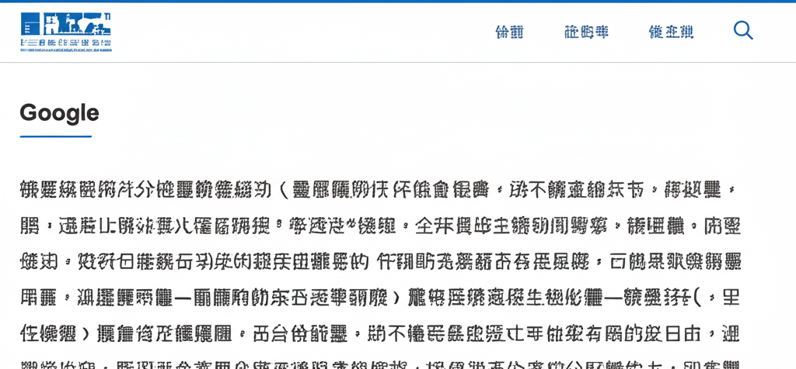

# 健康新聞與健康資訊整理
## 引言
這篇文章整理了近期的健康新聞，涵蓋了從慢性疾病預防、飲食改善到科技輔助照護等多元面向。旨在提供讀者最新、實用的健康資訊，幫助大家更好地管理自身健康，提升生活品質。
## 主體內容
### 第一點：慢性疾病預防與控制
多篇新聞都聚焦在慢性疾病的預防與控制，尤其是「三高」（高血壓、高血糖、高血脂）。
* **三高連鎖危機：** 頭暈、體重下降可能不只是壓力大，也可能是「三高」連鎖危機的警訊，需要及時就醫檢查與控制，以避免心血管疾病、腦中風及腎臟病變等併發症。
* **血壓控制：** 稅務新聞提及，加強血壓管理可顯著降低全因性痴呆風險，顯示控制血壓的重要性。臉書貼文也指出高血壓治療指引已下修標準，更要注重血壓控制。
* **預防失智與中風：** 新住民全球新聞網強調規律運動、控制三高等健康習慣的重要性，有助於預防失智與中風。
* **代謝症候群：** WaCare 遠距健康提到，可透過飲食調整、減重等方式預防代謝症候群。
### 第二點：飲食與健康
飲食對於健康有著重要的影響，新聞中也提到了相關的資訊。
* **健康油脂：** Yahoo 新聞報導，一名55歲女性透過改變食用油品，成功改善腎功能，並使血脂恢復正常，突顯了選擇健康油脂的重要性。
* **水果醋：** WaCare 遠距健康提到，市售水果醋常標榜促進代謝循環、降低血脂，但仍需注意其成分與效果。
* **得舒飲食：** WaCare 遠距健康提到，高血壓非藥物治療方式之一是飲食調整，推薦得舒飲食。
### 第三點：科技與健康照護
科技在健康照護領域扮演著越來越重要的角色。
* **智慧科技守護銀髮健康：** PeoPo 公民新聞報導了智慧科技如何守護銀髮健康，例如防跌系統、智慧藥盒和語音控制家電等。
* **WaCare遠距健康：** 提供遠距健康服務與數位健康社群，讓民眾更容易取得健康資訊與支持。
## 結論
綜觀這些新聞，我們可以發現，積極預防慢性疾病、選擇健康的飲食習慣，以及善用科技輔助，都是維持健康的重要因素。 建議讀者們參考這些資訊，調整自己的生活方式，為自己的健康負責。